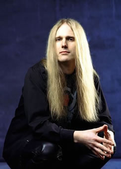
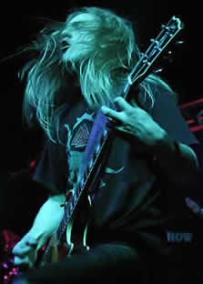

Entrevista
de Christofer Johansson à Andréa Santos
Rock Online - Julho de 2004
A banda está
na ativa desde do final dos anos 80 e tem fãs espalhados
por todo o planeta. O que você acha que foi um fator fundamental
para projetar a banda na cena internacional?
Eu acho que quando você faz alguma
coisa legal as pessoas começam a se interessar em conhecer
o seu trabalho e começam a se voltar para você.
Fizemos muitos álbuns bons que as pessoas gostaram e
isso fez com que fossemos projetados na cena, mundialmente falando.
Que
avaliação você faz do mercado musical mundial
nos dias de hoje, que produz todo tipo de música, sucessos
instantâneos, descartáveis, nem sempre de qualidade?
Um músico/artista pode se destacar simplesmente por seu
talento?
Sim, eu acho... Claro que o mercado musical
produz muita porcaria apenas para vender e são coisas
que realmente tem sucesso instantâneo e depois desapa-rece,
mas as bandas que realmente fazem um trabalho bom e honesto
vão permanecer e isso é o que importa.
Quanto a venda
de músicas pela internet, você acredita que as
novas tecnologias acabarão com o CD em breve? Muitas
pessoas apostam nisso...
Sim, provavelmente aparecerá algo
diferente, mas isso levará ainda algum tempo. Mas eu
acho que a troca de músicas pela internet não
afeta muito o cenário metálico, pois as pessoas
que curtem esse tipo de música querem ter o CD nas mãos...
Esse tipo de prática ocorre mais para pessoas que curtem
Britney Spears e porcarias como essa, mas não muito para
quem curte metal. Claro que se você vai a um país
onde as pessoas não têm muito dinheiro para comprar
um CD, baixar músicas pela internet ou comprar CDs piratas
é a melhor opção, mas, em sua maioria,
o fã de metal está interessado em qualidade.
Sobre as novidades
do Therion... Vocês estão lançando dois
álbuns, Sirius B e Lemuria. Por que
lançar dois álbuns ao mesmo tempo?
Porque nós tínhamos 55 músicas,
suficientes para três álbuns... E também,
nós ficamos muito tempo sem lançar nada por isso
decidimos lançar dois ao mesmo tempo para compensar essa
demora.
Nos conte
um pouco a respeito do processo de composição
e ainda sobre as gravações destes álbuns.
Na verdade começamos a compor antes
que nossa última turnê acabasse, depois demos um
tempo, terminamos a turnê, lançamos um disco ao
vivo e voltamos a compor novamente. Eu acho que teve muita diversidade
nas composições e isso levou algum tempo. Quanto
às gravações... Gravamos primeiro o básico:
baixo e guitarra e algumas linhas de vocal, depois fizemos as
gravações com a orquestra. Fomos para a Dinamarca
onde gravamos em uma velha igreja lá, e isso foi bem
caro! Gravamos algumas coisas em Hamburgo, na Alemanha. Todo
o processo de gravação levou mais ou menos onze
meses, pois não foi fácil juntar mais de 100 músicos
mais orquestra para a gravação dos discos.
Os álbuns
são conceituais? Qual a relação que existe
entre os dois?
Os álbuns não são
conceituais e também não tem nada haver um com
o outro. São completamente diferentes.
Do que falam
as canções de Sirius B e Lemuria?
Lemuria
conta a história parecida com a de Atlântida, porém
é muito mais antiga e muito maior. Já Sirius B
fala sobre um planeta. Uma órbita que gira em torno de
Sirius A. Se você olhar através de um telescópio
ficará difícil enxergá-lo, mas o telescópio
pode dizer a quantos milhões de quilômetros está
a órbita. A coisa mais interessante sobre isso, é
que uma tribo na África tem uma história sobre
essa órbita e eles nunca tiveram um telescópio
para poder vê-lo.
Algumas pessoas
consideram que, ao longo dos anos, a sonoridade do Therion está
ficando menos agressiva e mais melancólica. Você
concorda com isso?
Não, eu acho que são as duas
coisas, agressiva e melancólica... Os novos álbuns
são bem mais agressivos e mais direcionados. Temos climas
diferentes para álbuns diferentes. Mas somos uma banda
de metal e sempre seremos uma banda de metal, ainda que usemos
elementos diferentes em nossas músicas.
Vocês
estiveram no Brasil em 2001, como foram os shows por aqui? O
que mais gostaram do Brasil?
Falando por toda a banda, eu acho que todos
os três shows que fizemos foram muito legais, com um público
muito bom. E, se você perguntar o que a banda mais lembra
e mais gostou no Brasil todos vão dizer a mesma coisa:
a comida! Particularmente, isso foi o que menos gostei, pois
sou vegetariano e as pessoas sempre levam a gente para churrascarias...
Mas claro que pude encontrar algo para mim.
Quais as expectativas
para a nova turnê pelo Brasil? Alguma surpresa preparada
para os fãs brasileiros?
Em duas horas de show vamos procurar tocar
um pouco de cada disco, mas com mais ênfase nos novos
álbuns sem deixar os clássicos de lado. Também
vamos tocar músicas que nunca tocamos ao vivo antes e
acho que serão shows muito legais para os fãs.
Gostaria de
deixar algum recado aos leitores do Rock Online?
Obrigado a todos por nos darem suporte
ao longo de nossa carreira e espero vê-los em nossos shows.
Extraída
de http://www.rockonline.com.br